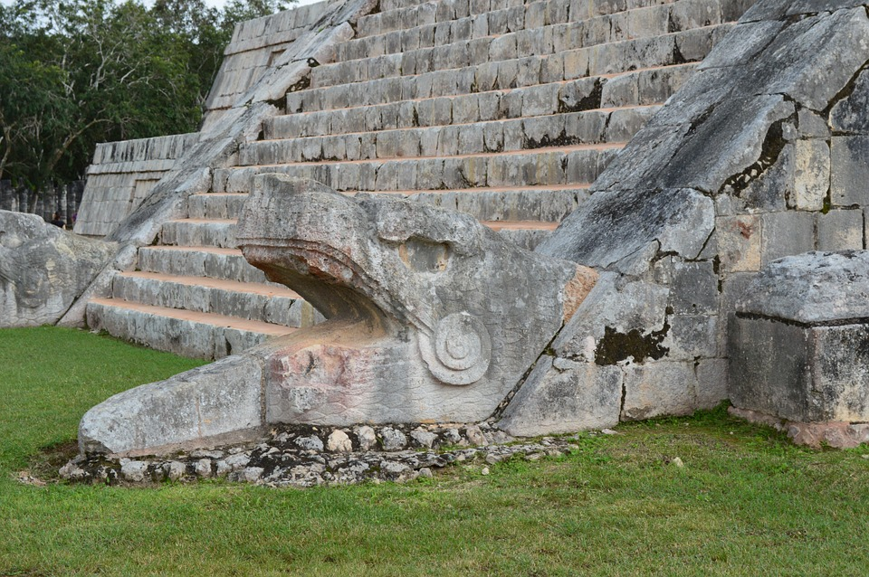
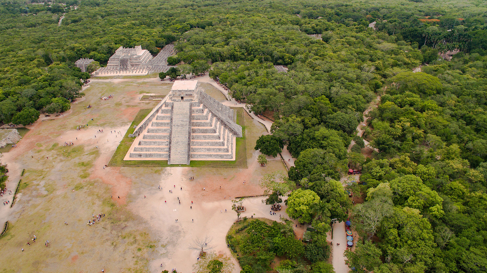
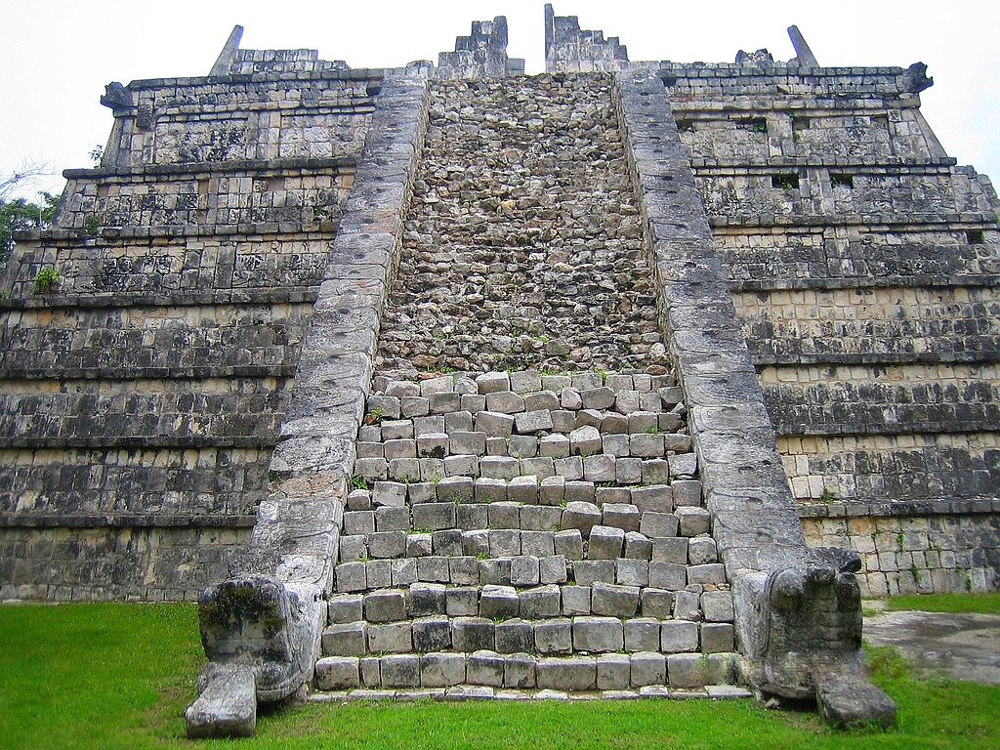

The Maya name "Chichen Itza" means "At the mouth of the well of the Itza." This derives from chi', meaning "mouth" or "edge", and chʼen or chʼeʼen, meaning "well". Itzá is the name of an ethnic-lineage group that gained political and economic dominance of the northern peninsula. One possible translation for Itza is "enchanter (or enchantment) of the water,"from its (itz), "sorcerer", and ha, "water".
The name is spelled Chichén Itzá in Spanish, and the accents are sometimes maintained in other languages to show that both parts of the name are stressed on their final syllable. Other references prefer the Maya orthography, Chichʼen Itzaʼ (pronounced [tʃitʃʼen itsáʔ]). This form preserves the phonemic distinction between chʼ and ch, since the base word chʼeʼen (which, however, is not stressed in Maya) begins with a postalveolar ejective affricate consonant. The word "Itzaʼ" has a high tone on the "a" followed by a glottal stop (indicated by the apostrophe).
Chichen Itza is located in the eastern portion of Yucatán state in Mexico. The northern Yucatán Peninsula is karst, and the rivers in the interior all run underground. There are four visible, natural sink holes, called cenotes, that could have provided plentiful water year round at Chichen, making it attractive for settlement. Of these cenotes, the "Cenote Sagrado" or Sacred Cenote (also variously known as the Sacred Well or Well of Sacrifice), is the most famous. In 2015, scientists determined that there is a hidden cenote under Kukulkan, which has never been seen by archeologists. According to post-Conquest sources (Maya and Spanish), pre-Columbian Maya sacrificed objects and human beings into the cenote as a form of worship to the Maya rain god Chaac. Edward Herbert Thompson dredged the Cenote Sagrado from 1904 to 1910, and recovered artifacts of gold, jade, pottery and incense, as well as human remains. A study of human remains taken from the Cenote Sagrado found that they had wounds consistent with human sacrifice.
The layout of Chichen Itza site core developed during its earlier phase of occupation, between 750 and 900 AD. Its final layout was developed after 900 AD, and the 10th century saw the rise of the city as a regional capital controlling the area from central Yucatán to the north coast, with its power extending down the east and west coasts of the peninsula. The earliest hieroglyphic date discovered at Chichen Itza is equivalent to 832 AD, while the last known date was recorded in the Osario temple in 998.
| Pictures | |
|---|---|
 |
 |
|  |  |
| Videos | |